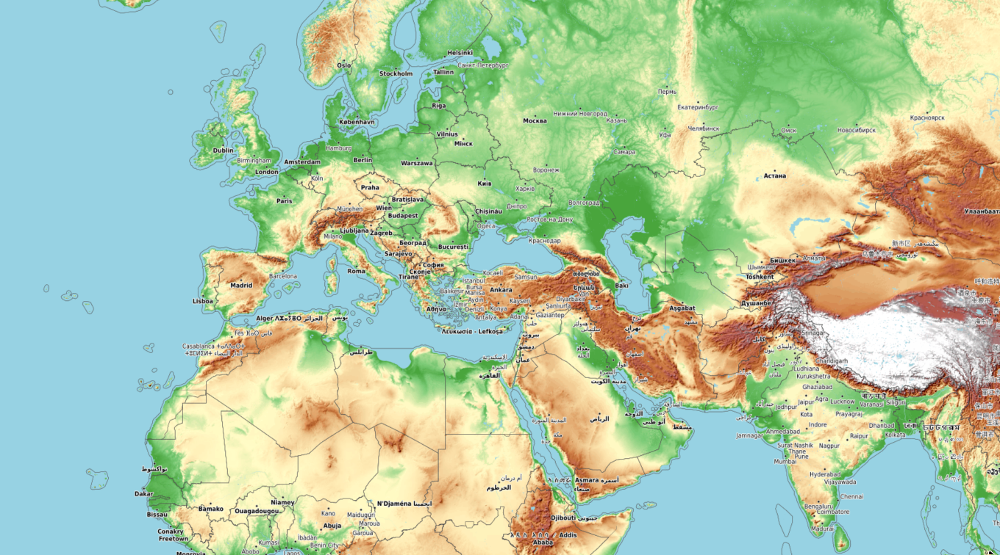

Select your drawing tool
Polygon
Circle
Known point
Undo
Clear
Querying our database
Save your work
OK
Known point
Longitude (WGS 84):
Latitude (WGS 84):
Radius (meters):
Draw circle
Drop or click to load a geographic file
×
Base Maps
Standard
Satellite

Terrain